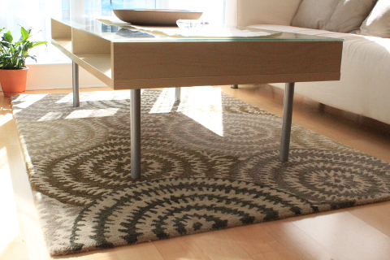

高品質なものをなんでも安く手に入れることのできるオンラインショップ
今住んでいるコンドの部屋が売りに出されて2ヶ月近く経つ（借りている家が売りに出された時）。
ここ１、２週間は部屋をみにくるひともいない。てっきり売れたのかとおもったらそうでもなかった。
さて、部屋を見に来るひとが、部屋をきれいにしていることと、インテリアに関して素敵ね、と褒めてくれることがたびたびある。
お世辞とはいえ、もちろんとてもうれしいが、それ以上にうれしい言葉、それは、招いた友人たちが、この部屋落ち着くね、と言ってくれること。
落ち着ける部屋づくり、それが最大の目的だったから。
私がインテリアで参考にしたのは風水。
もちろん高額な絵や置物といった風水ビジネスに儲けさせることはせず、自分なりにとりいれられる範囲で。
私が参考にしたインテリア風水では、足元が冷えないようにリビングにはラグを敷くことを推奨していた。
リビングは北東に位置するのでベージュ系の色の、かつ、天然素材であり、化繊ではないもの暖かみのあるウールのものを探していた。ただ、天然素材のラグって結構なお値段するのだ。
COSTCO、WALMART、IKEA、HOME&SENSE、などなど探したものの、好みの色柄で、値段が手ごろなのって、なかなかみつけられなかったが、最終的にbeyond the rackでどこよりも安く、満足いくものを買えた。

デザインは北欧風テイストのリビングに馴染むような、ナチュラルテイストかつモダンな柄で、質のほうもしっかりとしていて厚みがあり丈夫そうで長く使えそう。アクセントになるくらいの小さめのサイズも我が家のリビングにぴったり。
なんとなく物足りない雰囲気を補ってくれたし、実は以前の住人でジャーマンシェパードを飼っていたひとがいたらしいのだが、その犬の、猫がするような爪の研ぎ跡が床にしっかり刻まれていたのだが、それもしっかり覆い隠された。欲しいなら買えば、なんて言っていたＪ次郎もすっかり気に入った様子。
beyond the rackはキッチン用品、家電、家具や、ハンドバッグや靴、服や時計などブランド物や有名メーカーものが安く手に入れることができるのだ。
実はカナダで人気のＪ次郎のCANADA GOOSEのジャケットも２年前ここで購入した。そのときはオーダーしてから届くまでかなり時間がかかったので大丈夫かとおもったが、今回のラグは２週間程度で届いた。どうやらはCANADA GOOSEは時間がかかるので有名らしい。CANADA GOOSEはほとんど値下げしないのだが、店頭で買うより１００ドル近く安く買えた。ちょっと重たいけれど、すごーく暖かく、トロントの厳しい冬には大活躍している。
＞＞＞beyond the rack（公式サイト）